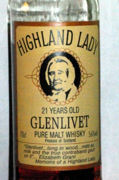

© M.A. Padlipsky [© 2021 William D Ricker d/b/a Literary Estate of M.A.Padlipsky]
Up to Malt home — Continue the saga Emphasis, linkage, and marginalia supplied by the Editor.[This was orignally written at the request of whiskynet.com, An early order-by-email, deliver-by-post Scotch vendor. Probably unaffiliated with the current tenant at whiskynet.co.uk? but they later redid their web site and didn't carry it over. Still, they deserve the credit, and/or blame, for instigating it.]
(Also known as mapmap.jpg.) The background map is on a wall
in the tasting room of the Central Research Facility (more formally
known as the Cairngorm Whisky Centre, just outside of Aviemore,
Cairngorm Whisky Centre & Museum, in "downtown" Aviemore,
in the middle of the Cairngornms National Park, headwaters of the River Spey.
Alas long since closed.
In the Research Notes, MAP refers to CWC&M as the Central Research Facility,
and his Source notation C1 C2 C3 denote samples sampled at their Museum Tasting Bar on 1st, 2d, 3d trips there.
if you're Over There and want to do some research of your own); if you
press the button by the name of a distillery on the panel below, a
light will come on at the location of the distillery on the map -- if
nothing's gone wrong with the wiring recently, anyway. The foreground
MAP is The Author (sorry for any disappointment; that's all there is,
even though I did once get a telephone call at work from a programmer
who worked for Univac who'd been astute enough to have figured out that
I was the right person to ask about the design intent of the Telnet
Protocol, and when it came out in the course of the conversation that
I'm not above average height she said, quite unsarcastically I believe,
"But you write as if you're seven feet tall!"), and the Girlfriend is
the bottle of "Highland Lady", q.v., which I'd just purchased.

Highland Lady is named for and pictures Elizabeth Grant,
original matriarch of the Glenlivet Smith Grant family and distillery, whose wrote Memoirs of a Highland Lady
The good folk at WhiskyNet not only had the refined
arachnidemic courtesy to ask for permission to put up a copy of the
Research Notes -- unlike the dozen or so people and/or
organi[z|s]ations I'm aware of who put up copies or put in plinkables
without even bothering to offer me the ego gratification of saying they
had, and thanks -- they also were incautious enough to ask me if I'd
furnish some background information about myself. Since they weren't so
incautious as to fail to use the dreaded "brief" in their request,
though, I won't requite their courtesy will all the bytes that would be
consumed if I did use the occasion finally to get around to writing an
essay that's been started in my head a number of times over the years,
to be called "The Malt and I". After all, an essay to me is probably a
monograph to you, and they were even kind enough to spare the kilobytes
for mapmap.jpg,
This being back when the WWWeb was young and KiloBytes were "big".
so I wouldn't want to risk boring you or running up
their storage charges unduly. Besides, if you're curious about what I
did professionally, you probably already plinked the "among other
things" plinkable before you plinked the one that led you to this, and
that should have led to enough to satisfy your curiosity along those
lines, even if some of the details aren't completely accurate according
to my recollections. So this will just be the, or perhaps even a,
prolegomena [hmm, wonder if that should be prolegomenon;
According to merriam-webster.com, MAP's afterthought is correct; the latter is the correct singular: "One of the Prolegomena" or "the Prolegomenon".
oh, well, not
to worry, I never was particularly Scholarly, grad school dropout that
I am
MAP's path was from Physics Major to English (Humanities) Major to English Grad School (teaching assistant starvation wages) to applying for a Tech Writer job on SAGE.
Where he was told they were full up on Writers at the moment, but since he had one programming class at MIT on his CV, would he like to take their Programmer Aptitude Test? )
] to said essagraph ... or monosay.
It was a very long time ago, in "Internet Years", that I started telling people my real field of research interest is what we call single malt Scotch in the States, or what they call malt whisky Over There (unless I was Over There, in which case I of course said Over Here ... and you). Indeed, it was so long ago that "The Net" meant the ARPANET, and I'm not even sure if the paper proposing what eventually became TCP/IP had even been written yet. (Yes, I know when the paper was written, or could look it up if I'd forgotten, but what I don't recall is exactly when I first started using the line.) Some people who heard that scuttled away, of course, since it was often used at allegedly learned conferences in the early days, when one was often asked what one's real field of research interest was. To those who expressed an interest, though, I'd go on to say that I came by the interest honestly, having been drinking good Scotch, though not single malts, since I was eight days old. And that almost never drove anyone away, since it clearly called for an explanation, elaboration, or explication, depending upon just how Scholarly the victimxxxvis-a-vis was....
Well, it's fairly straightforward, but it's also fairly central to how an emphatically NON-yuppie American "computer scientist" (I always wrote "Programmer" on the Occupation line of my tax forms, actually -- back when I could still smoke in my own office and hence could still work for a living), who although an Old Network Boy of the ARPANET didn't happen to get involved in any of those fabled "start-ups" and cash in for enough to be able to indulge himself more or less freely in what became a rather expensive hobby, came to take up such a rather expensive hobby. You see, when I was born, my father was in the wholesale grocery business and hence was able to buy a case of what we call Haig and Haig Pinch over here (Dimple Haig, Over There) at a rather good price to celebrate the occasion. The family being Jewish, the celebration started at the "bris" (or ritual circumcision), and in lieu of the few drops of wine the victimxxxmale child is customarily given on such occasions, family legend has it that I was given a few drops of the Pinch. So as far as I know, I really did start drinking good Scotch at the age of eight days.
("Brief" or not, a digression is necessary at this point: The Pinch, as am I, was a pre-War product. WW II, that is. Not the Great War. My parents set aside two bottles, one for my "bar mitzvah" and one for my wedding. Now, as it happened, the wedding never did take place. In the full version, I'll probably indulge myself in the second-order digression about the Scots-surnamed young lady I met over a glass of Scotch it would have taken place to/with if her family hadn't objected to my surname, but for present purposes suffice it to say that when I turned 40 and was still a bachelor I told my parents that I was claiming the remaining bottle, since it was collateral research material to my real field of research interest, but if nothing sufficiently significant happened to cause me to open it in the meantime I'd bring it back and share it with them on their 50th anniversary, some five years thence, which is what duly happened. I barely got any of the bar mitzvah bottle, and wasn't particularly ready to appreciate it at age 13 anyway, but by the time of my parents' 50th anniversary, I'd been "into" single malts for 15 or so years and was in a position to say without any shadow of doubt that They have so changed the percentage of grain whisky in good blendeds since the War, and not in the direction the consumer would prefer. The pre-War Pinch compares favorably to good singles, in my humble but dogmatic opinion. I'd almost certainly place it among the 30 or so in my Top 15.)
Between eight days and around 30 years of age, then, I was a "Scotch drinker". Indeed, as intimated, the closest I came to getting married was to a young lady I met over a glass of Scotch. The Scotch, however, was always duly labelled Blended Scotch, whatever that meant. Then one day an old school friend I was visiting for dinner said, "You like Scotch; try this" after dinner, and the this was Glenfiddich, and the hook was set. Now, granted Glenfiddich isn't one of the prestige singles, but it was the one of the three (the other two being Glenlivet and Laphroaig) which had first penetrated the U.S. market (in "our" Cambridge, anyway) that Phil had happened to impulse-buy. And it was enough "better", or at any rate more intriguing, than the severalmany Scotches I'd had over the intervening years that I went out and got some for myself. And later some Laphroaig. And some Talisker and Highland Park a couple of years still later when the knowledgeable clerk at Brookline Liquor Mart Back in that day, BLM had the best selection in the Greater Boston Area. told me to try them (at less than $20 at the time: eat your hearts out). And this, that, and the other thing that happened to be on sale -- non-yuppie, remember, and even worse, still on the Research Staff at M.I.T., which only claimed to be paying 80% of comparable industry wages, and was almost certainly lying -- at the liquor store attached to the Fresh Pond Stop and Shop. (No Glenlivet, as it happened; it was still considered a prestige one back then and always cost more than the ones I did wind up trying, so I didn't taste it until perhaps a dozen years later, under circumstances that probably won't be recounted in this version.)Skip ahead to the mid-'70s (say half a dozen or so years from the First 'Fiddich Epiphany). Skip out to Boring, Oregon. (Yes, there really is a Boring, Oregon; named after Old Frank Boring, I was assured.) One of the other Old Network Boys had dropped out and bought a "mom and pop" tree nursery in Boring with his then-new bride. He was also one of the two other Old Network Boys with whom I'd had my/our first tastes of Laphroaig, from around 1 A.M. to 4 A.M. after a meeting at SRI a few years earlier to do something vaguely historical, probably refine the File Transfer Protocol. (Fortunately, the third of us was quite large, since of course by around 3 A.M. it was, or at least seemed, clear that the bottle had to be finished....) So when he said "Try this" after dinner I wasn't at all surprised that it was Something Good. I was, however, astonished at how Good it was. It was the Glen Grant "Magnificent Old Highland Malt", q.v., and as Noted it was a Transcendent experience. Unfortunately, it had come in a mixed case of single malts that John and Susan's former colleagues at SRI had given them as a wedding present, and the rather grand shop in Menlo Park the case had come from didn't have any more when asked about it. Nor did anybody else. (I was even put on to Jack Gross in Baltimore, who was said to be the country's biggest importer of Scotch by the owner of the Brookline Liquor Mart when I asked him for help, and even Mr. Gross had no luck tracking it down.) And that's when I started saying that my real field of research interest would be finding the world's second best single malt Scotch, though I still had some hope that somebody I knew would drop by the Army and Navy Stores in London and get me some, so I was only around 50% serious about it at the time.
Skip ahead to the early '80s. Mid-'82, in fact. The Net had gone international by then, and I finally got to London myself, on my rich Uncle's nickel. (Even the full version almost certainly won't digress to the reasons why I'd decided in October of '69 that I wouldn't go back to London again out of my own pocket, but I had so decided.) First stop, the Army and Navy Stores, naturally. Horror of horrors: they didn't have any more of the MOHM, either. It was a "private filling", I was told by the Assistant Manager of the Wine and Spirits Department, and the Army and Navy Stores had since been acquired by the House of Fraser, (Extremely) Limited, and they'd [make that They'd] decreed that Harrod's was Their prestige Wine and Spirits Department so the A&N were banned from doing any further private fillings, and of course what there was of the MOHM had long since been sold (or drunk up by the Directors). Off to the phone book. Aha, there is a London office of Glen Grant. Off to said office. More horror: they'd been acquired by Seagram, I think it was, and been banned from selling any further distillate for private fillings ("because They can make all the money They want selling it at five years old to the Italians"). Back when Italy was the best market for Single Malt Scotch, Glen Grant was the best seller there - young, pale, not the dark sherry-monster beloved by Mike and me. And THAT'S when I decided I was at least 75% serious that my real field of research interest would be finding the world's second best single malt Scotch....
Briefness pro formatudes or not, it wouldn't be
right to end it there,
however good the punchline. The next year, after the next European
meeting of the Internet Research Group, as it was then called, I booked
a few days in Scotland (out of my own pocket), where I'd never been
before despite having vacationed in Britain on four occasions, out of
bitterness that I hadn't made it there with my then-fiance' (the
Scots-surnamed one, of course) the first time I was ever Over There.
(Again, even the full version wouldn't think of digressing as far off
course as to go into why our plans to go fell through; at least that
one wasn't her family's fault, though.) By an incredible stroke of luck
I'd come across a flyer [leaflet?] for the "Cairngorm Whisky Centre and
Museum" at the Scottish Tourist Board Office in London at the start of
the trip, and decided I had to check it out even though I'd intended to
base myself in Edinburgh and it was clearly not a day trip from there.
Once I got there, it didn't take very long for me to realize that it
was in fact the Central Research Facility,
See sidenote under MapMap at top of this page.
where I could not only taste
as many as I could and still be able to make it back to the hotel
without its costing me the fortune I still didn't have even though I
was long since out of M.I.T.'s employ but also do so in consultation
with an incredibly knowledgeable host, and fortunately there were a
couple of more European meetings over the next few years, so I was able
to spend five or six days there on the latter occasions, as opposed to
the single day there the first time [or C1, in the Notes]. And the rest
is, dare I say it? sure, why not: Notes to you.
OK, that's a terrible punchline; nowhere near the quality of the Pun of the Year for 1986, that'll surely be in the full version (as will a meaty digression on why I strongly prefer "grades" to numeric scores, the short form of which is that it's fallacious to attempt to quantify the qualitative). So I'll conclude by giving a non-answer to the implicit initiating question: what is, in my humble but dogmatic opinion, the world's second best single malt Scotch? I dunno. Pick whichever you like best of the ones I give *'s to, I guess, if you can find all of 'em anymore (which you can't, but I won't get started on the loss of the revered 12 y.o. Lagavulin; I think the G&M Port Ellen comes closest to it, but I hear it's been altered lately, though I don't know it for a fact). Or ask me after I finally risk opening the magic Butt 574 Ardbeg, q.v. (and realize I say risk because I've always had a strong tendency to hoard the really good ones for special occasions, only to discover that when open too many years too many of them lose their oomph). But it's somewhere between unfair and disingenuous to cite ones that aren't available any longer themselves, so I guess I'll have to say that the 18 y.o. Macallan -- at least the way They were making it in the '60s and '70s; it too might've done a character shift in recent years -- came closest to the MOHM, so really ought to be The Answer ... if it weren't for the fact that I wound up liking the "old" 12 y.o. Lagavulin better....
And now, if not indeed several kB ago, it's clearly
time for the
traditional